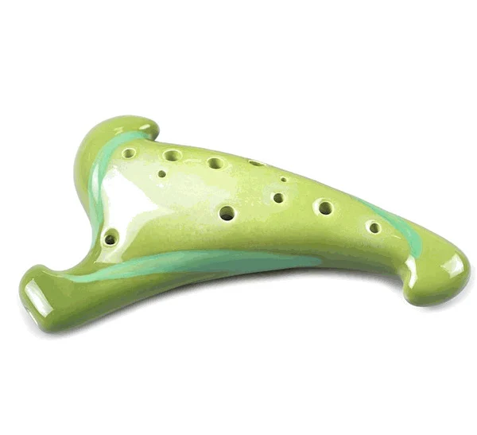

A ocarina triangular é um modelo moderno e estilizado que foge do formato tradicional. Seu design inovador chama atenção tanto como instrumento musical quanto como peça decorativa, tornando-se uma excelente opção para quem busca originalidade. A forma triangular proporciona uma pegada diferenciada e confortável, ideal para músicos que gostam de experimentar novos estilos.
Além do visual marcante, a ocarina triangular mantém a clareza e qualidade sonora típicas do instrumento. É perfeita para colecionadores, músicos e admiradores que desejam unir música e arte em um só produto, garantindo exclusividade e personalidade em cada apresentação.
R$400,00